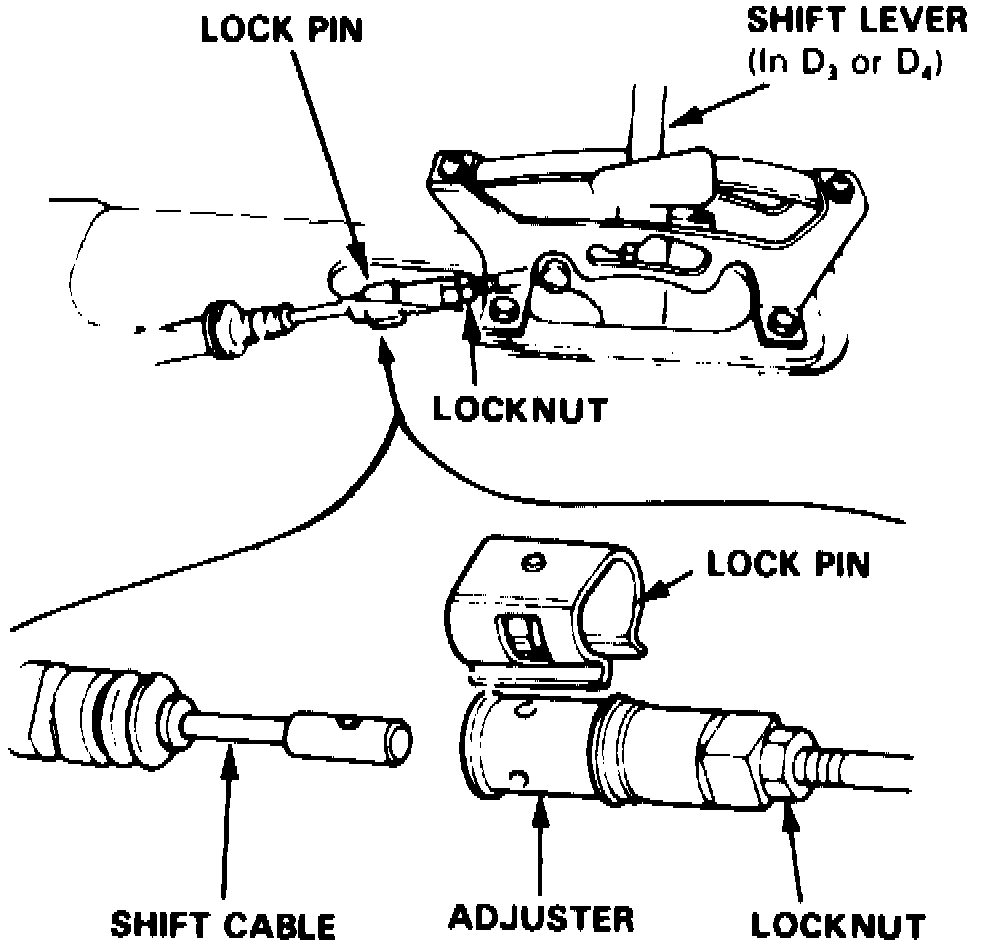

Shift Cable: Adjustments
1. Obtain five digit radio theft protection code as outlined under Technician Safety Information.Fig. 6 Shift Cable Adjustment:

2. With engine off, remove console, then proceed as follows:
a. Place shift lever in Reverse range.
b. Remove lockpin from cable adjuster, Fig. 6.
3. Ensure hole in adjuster is perfectly aligned with hole in shift cable.
4. If holes are not aligned, loosen locknut on shift cable and adjust as necessary. There are two holes in end of shift cable positioned 90° apart to allow for small adjustments.
5. Tighten locknut to specifications, then install lockpin on adjuster. If lockpin binds during installation, cable is still out of adjustment.
6. Start engine and check shift lever operation through all gears. If any gear does not engage properly, refer to Troubleshooting.
7. Reactivate radio as outlined under Technician Safety Information.